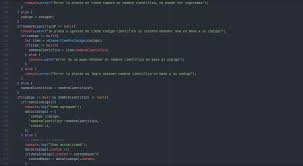

Propiedades básicas de CSS 
Inicio
Información General
|
Bienvenidos a su OVI donde va a encontrar las mejores practicas para diseñar y crear su paginas
Web, en los links de apoyo encontrará mucha informacion para realizar la pagina Web que desee.
|
|
Objetivo General
|
Diseñar una OVI del curso diseño de sitios WEB con el tema Propiedades basicas de CSS
|
|
Objetivos Especificos
- Adquirir conocimientos en las estructuras del HTML5
- Entender y configurar el repositorio para anibistrar nuestras paginas Web
- Identificar las diferentes etiquetas que maneja el HTML5
|
|
Tematicas del OVI
|
Las tematicas a tratar en este portal del saber son especificamente las propiedades de CSS, igualmente las mas recomendadas
dando al estudiante unas bases solidas para la elaboracion de proyectos y diseño de sitios web, aplicacando los conocimentos
adquiridos podremos proponer proyectos que seran de mucha ayuda en el día a día.
|

|